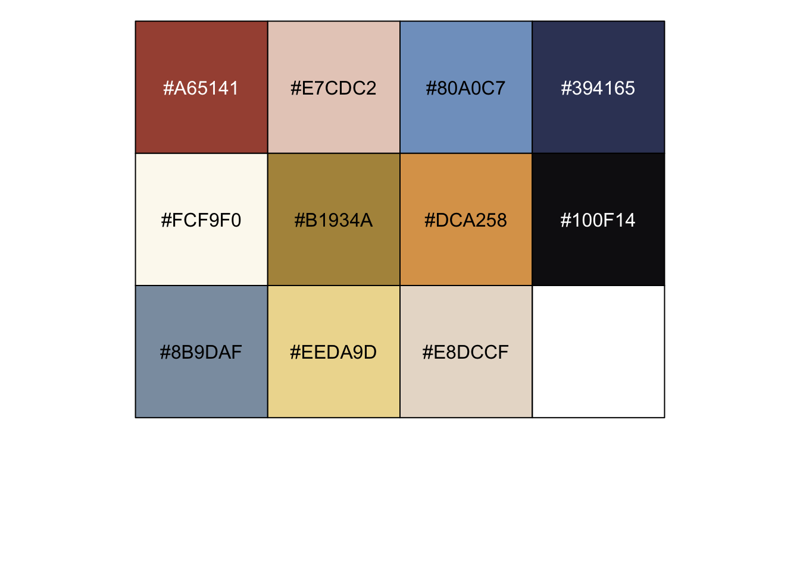
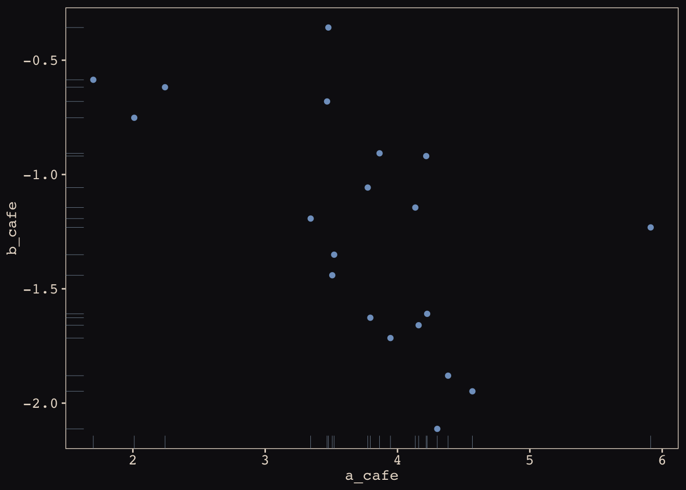
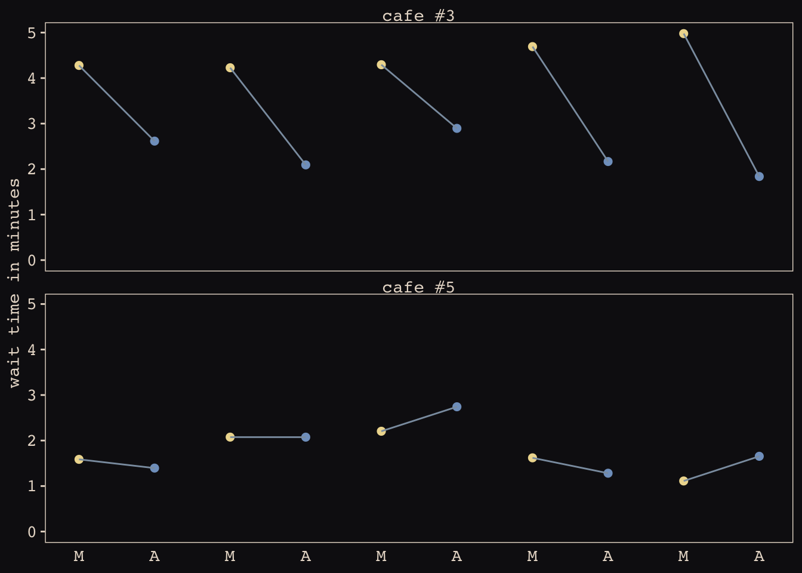
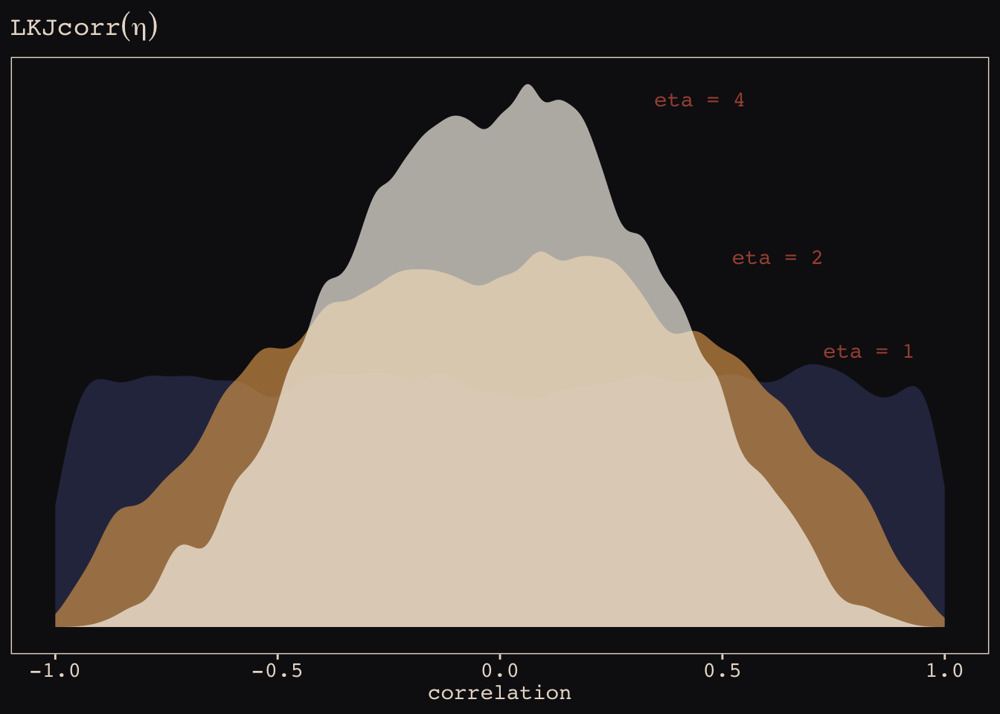
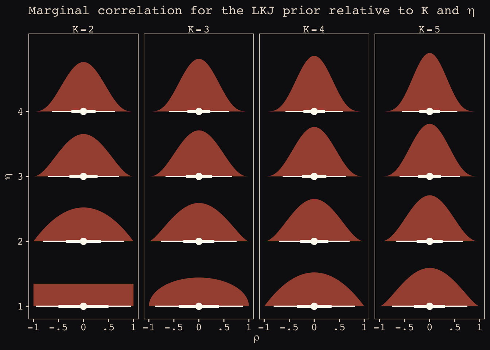
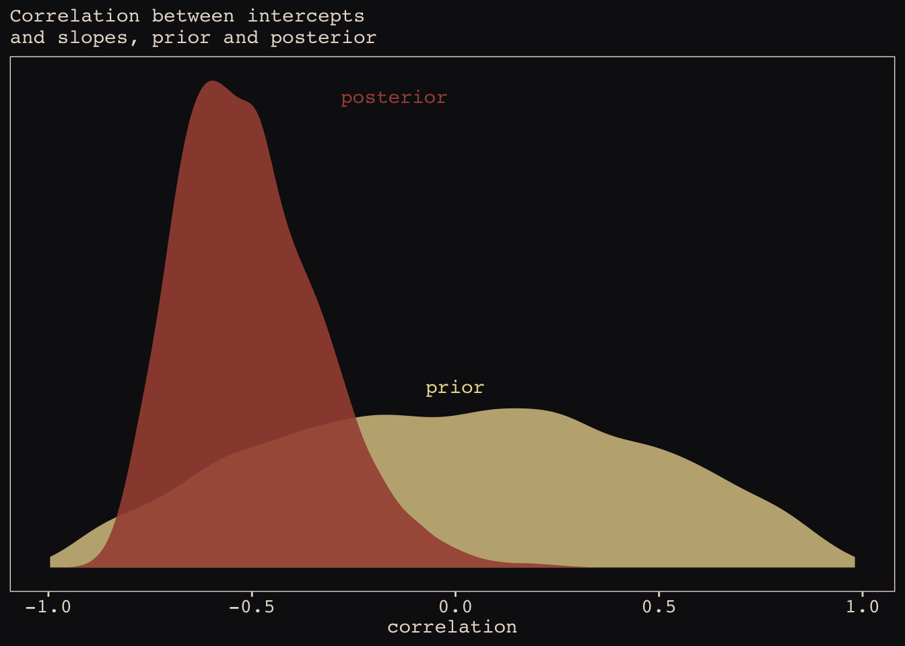
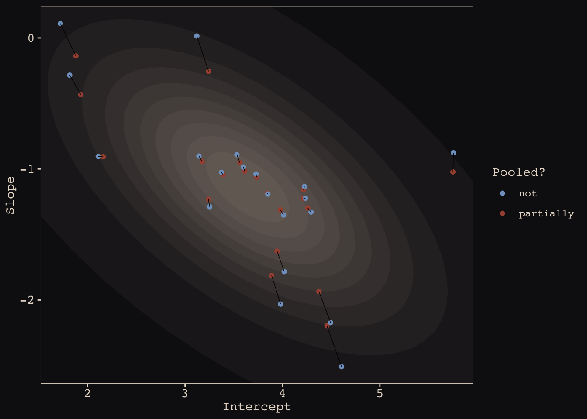
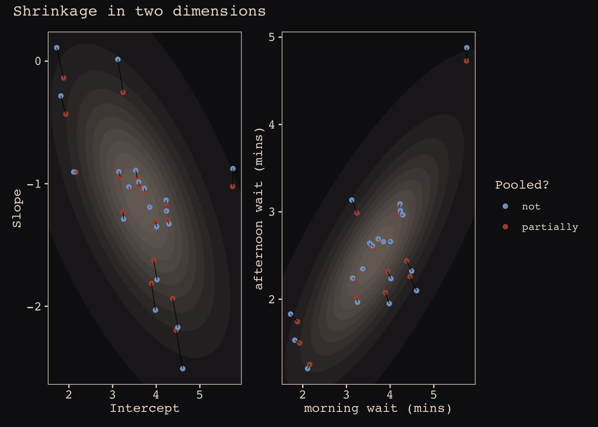

rm(list = ls())
a <- 3.5 # average morning wait time
b <- -1 # average difference afternoon wait time
sigma_a <- 1 # std dev in intercepts
sigma_b <- 0.5 # std dev in slopes
rho <- -.7 # correlation between intercepts and slopes
# the next three lines of code simply combine the terms, above
mu <- c(a, b)
cov_ab <- sigma_a * sigma_b * rho
sigma <- matrix(c(sigma_a^2, cov_ab,
cov_ab, sigma_b^2), ncol = 2)14 Adventures in Covariance
14.1 Varying slopes by construction
14.1.1 Simulate the population.
It’s common to refer to a covariance matrix as \(\Sigma\). The mathematical notation for those last couple lines of code is \[ \Sigma = \begin{bmatrix} \sigma_\alpha^2 & \sigma_\alpha \sigma_\beta \rho \\ \sigma_\alpha \sigma_\beta \rho & \sigma_\beta^2 \end{bmatrix}. \]
matrix(1:4, nrow = 2, ncol = 2) [,1] [,2]
[1,] 1 3
[2,] 2 4library(tidyverse)── Attaching core tidyverse packages ──────────────────────── tidyverse 2.0.0 ──
✔ dplyr 1.1.4 ✔ readr 2.1.5
✔ forcats 1.0.0 ✔ stringr 1.5.1
✔ ggplot2 3.5.1 ✔ tibble 3.2.1
✔ lubridate 1.9.4 ✔ tidyr 1.3.1
✔ purrr 1.0.2
── Conflicts ────────────────────────────────────────── tidyverse_conflicts() ──
✖ dplyr::filter() masks stats::filter()
✖ dplyr::lag() masks stats::lag()
ℹ Use the conflicted package (<http://conflicted.r-lib.org/>) to force all conflicts to become errorssigmas <- c(sigma_a, sigma_b) # standard deviations
rho <- matrix(c(1, rho,
rho, 1), nrow = 2)
# now matrix multiply to get covariance matrix
sigma <- diag(sigmas) %*% rho %*% diag(sigmas)
# how many cafes would you like?
n_cafes <- 20
set.seed(5) # used to replicate example
vary_effects <-
MASS::mvrnorm(n_cafes, mu, sigma) %>%
data.frame() %>%
set_names("a_cafe", "b_cafe")
head(vary_effects) a_cafe b_cafe
1 4.223962 -1.6093565
2 2.010498 -0.7517704
3 4.565811 -1.9482646
4 3.343635 -1.1926539
5 1.700971 -0.5855618
6 4.134373 -1.1444539a_cafe = our cafe-specific intercepts b_cafe = our cafe-specific slopes
# devtools::install_github("EdwinTh/dutchmasters")
library(dutchmasters)
dutchmasters$pearl_earring red(lips) skin blue(scarf1) blue(scarf2)
"#A65141" "#E7CDC2" "#80A0C7" "#394165"
white(colar) gold(dress) gold(dress2) black(background)
"#FCF9F0" "#B1934A" "#DCA258" "#100F14"
grey(scarf3) yellow(scarf4)
"#8B9DAF" "#EEDA9D" "#E8DCCF" scales::show_col(dutchmasters$pearl_earring)
theme_pearl_earring <- function(light_color = "#E8DCCF",
dark_color = "#100F14",
my_family = "Courier",
...) {
theme(line = element_line(color = light_color),
text = element_text(color = light_color, family = my_family),
axis.line = element_blank(),
axis.text = element_text(color = light_color),
axis.ticks = element_line(color = light_color),
legend.background = element_rect(fill = dark_color, color = "transparent"),
legend.key = element_rect(fill = dark_color, color = "transparent"),
panel.background = element_rect(fill = dark_color, color = light_color),
panel.grid = element_blank(),
plot.background = element_rect(fill = dark_color, color = dark_color),
strip.background = element_rect(fill = dark_color, color = "transparent"),
strip.text = element_text(color = light_color, family = my_family),
...)
}
# now set `theme_pearl_earring()` as the default theme
theme_set(theme_pearl_earring())vary_effects %>%
ggplot(aes(x = a_cafe, y = b_cafe)) +
geom_point(color = "#80A0C7") +
geom_rug(color = "#8B9DAF", linewidth = 1/7)
cor(vary_effects$a_cafe, vary_effects$b_cafe)[1] -0.572153714.1.2 Simulate observations.
n_visits <- 10
sigma <- 0.5 # std dev within cafes
set.seed(22) # used to replicate example
d <-
vary_effects %>%
mutate(cafe = 1:n_cafes) %>%
expand_grid(visit = 1:n_visits) %>%
mutate(afternoon = rep(0:1, times = n() / 2)) %>%
mutate(mu = a_cafe + b_cafe * afternoon) %>%
mutate(wait = rnorm(n = n(), mean = mu, sd = sigma)) %>%
select(cafe, everything())d %>% glimpse()Rows: 200
Columns: 7
$ cafe <int> 1, 1, 1, 1, 1, 1, 1, 1, 1, 1, 2, 2, 2, 2, 2, 2, 2, 2, 2, 2, …
$ a_cafe <dbl> 4.223962, 4.223962, 4.223962, 4.223962, 4.223962, 4.223962, …
$ b_cafe <dbl> -1.6093565, -1.6093565, -1.6093565, -1.6093565, -1.6093565, …
$ visit <int> 1, 2, 3, 4, 5, 6, 7, 8, 9, 10, 1, 2, 3, 4, 5, 6, 7, 8, 9, 10…
$ afternoon <int> 0, 1, 0, 1, 0, 1, 0, 1, 0, 1, 0, 1, 0, 1, 0, 1, 0, 1, 0, 1, …
$ mu <dbl> 4.223962, 2.614606, 4.223962, 2.614606, 4.223962, 2.614606, …
$ wait <dbl> 3.9678929, 3.8571978, 4.7278755, 2.7610133, 4.1194827, 3.543…d %>%
mutate(afternoon = ifelse(afternoon == 0, "M", "A"),
day = rep(rep(1:5, each = 2), times = n_cafes)) %>%
filter(cafe %in% c(3, 5)) %>%
mutate(cafe = str_c("cafe #", cafe)) %>%
ggplot(aes(x = visit, y = wait, group = day)) +
geom_point(aes(color = afternoon), size = 2) +
geom_line(color = "#8B9DAF") +
scale_color_manual(values = c("#80A0C7", "#EEDA9D")) +
scale_x_continuous(NULL, breaks = 1:10,
labels = rep(c("M", "A"), times = 5)) +
scale_y_continuous("wait time in minutes", limits = c(0, NA)) +
theme_pearl_earring(axis.ticks.x = element_blank(),
legend.position = "none") +
facet_wrap(~ cafe, ncol = 1)
14.1.3 The varying slopes model.
$$ \[\begin{align} \text{wait}_i & \sim \text{Normal}(\mu_i, \sigma) \\ \mu_i & = \alpha_\text{cafe[i]} + \beta_{\text{cafe[i]}}\text{afternoon}_i \\ \begin{bmatrix} \alpha_{\text{cafe}} \\ \beta_{\text{cafe}} \end{bmatrix} & \sim \text{MVNormal} \begin{pmatrix} \begin{bmatrix} \alpha \\ \beta \end{bmatrix}, \Sigma \end{pmatrix} \\ \Sigma & = \begin{bmatrix} \sigma_\alpha & 0 \\ 0 & \sigma_\beta \end{bmatrix} \text{R} \begin{bmatrix} \sigma_\alpha & 0 \\ 0 & \sigma_\beta \end{bmatrix} \\ \alpha & \sim \text{Normal}(5, 2) \\ \beta & \sim \text{Normal}(-1, 0.5) \\ \sigma & \sim \text{Exponential}(1) \\ \sigma_\alpha & \sim \text{Exponential}(1) \\ \sigma_\beta & \sim \text{Exponential}(1) \\ \text{R} & \sim \text{LKJcorr}(2), \end{align}\] $$
where \(\Sigma\) is the covariance matrix and \(\text{R}\) is the corresponding correlation matrix, which we might more fully express as \[ \begin{bmatrix} 1 & \rho \\ \rho & 1 \end{bmatrix}. \]
And according to our prior, \(\text{R}\) is distributed as \(\text{LKJcorr}(2)\). We’ll use rethinking::rlkjcorr() to get a better sense of what that even is.
library(rethinking)Loading required package: cmdstanrThis is cmdstanr version 0.8.1- CmdStanR documentation and vignettes: mc-stan.org/cmdstanr- CmdStan path: /Users/gharda/.cmdstan/cmdstan-2.35.0- CmdStan version: 2.35.0
A newer version of CmdStan is available. See ?install_cmdstan() to install it.
To disable this check set option or environment variable cmdstanr_no_ver_check=TRUE.Loading required package: posteriorThis is posterior version 1.6.0
Attaching package: 'posterior'The following objects are masked from 'package:stats':
mad, sd, varThe following objects are masked from 'package:base':
%in%, matchLoading required package: parallelrethinking (Version 2.40)
Attaching package: 'rethinking'The following object is masked from 'package:purrr':
mapThe following object is masked from 'package:stats':
rstudentn_sim <- 1e4
set.seed(14)
r_1 <-
rlkjcorr(n_sim, K = 2, eta = 1) %>%
data.frame()
set.seed(14)
r_2 <-
rlkjcorr(n_sim, K = 2, eta = 2) %>%
data.frame()
set.seed(14)
r_4 <-
rlkjcorr(n_sim, K = 2, eta = 4) %>%
data.frame()# for annotation
text <-
tibble(x = c(.83, .625, .45),
y = c(.56, .75, 1.07),
label = c("eta = 1", "eta = 2", "eta = 4"))
# plot
r_1 %>%
ggplot(aes(x = X2)) +
geom_density(color = "transparent", fill = "#394165", alpha = 2/3, adjust = 1/2) +
geom_density(data = r_2,
color = "transparent", fill = "#DCA258", alpha = 2/3, adjust = 1/2) +
geom_density(data = r_4,
color = "transparent", fill = "#FCF9F0", alpha = 2/3, adjust = 1/2) +
geom_text(data = text,
aes(x = x, y = y, label = label),
color = "#A65141", family = "Courier") +
scale_y_continuous(NULL, breaks = NULL) +
labs(title = expression(LKJcorr(eta)),
x = "correlation")
The shape of LKJ is sensitive to both \(\eta\) and the \(K\) dimensions of the correlation matrix. We can simulate the combinations of \(\eta\) and K.
library(tidybayes)
crossing(k = 2:5,
eta = 1:4) %>%
mutate(prior = str_c("lkjcorr_marginal(", k, ", ", eta, ")"),
strip = str_c("K ==", k)) %>%
parse_dist(prior) %>%
ggplot(aes(y = eta, dist = .dist, args = .args)) +
stat_dist_halfeye(.width = c(.5, .95),
color = "#FCF9F0", fill = "#A65141") +
scale_x_continuous(expression(rho), limits = c(-1, 1),
breaks = c(-1, -.5, 0, .5, 1),
labels = c("-1", "-.5", "0", ".5", "1")) +
scale_y_continuous(expression(eta), breaks = 1:4) +
ggtitle(expression("Marginal correlation for the LKJ prior relative to K and "*eta)) +
facet_wrap(~ strip, labeller = label_parsed, ncol = 4)
detach(package:rethinking, unload = T)
library(brms)Loading required package: RcppLoading 'brms' package (version 2.22.0). Useful instructions
can be found by typing help('brms'). A more detailed introduction
to the package is available through vignette('brms_overview').
Attaching package: 'brms'The following objects are masked from 'package:tidybayes':
dstudent_t, pstudent_t, qstudent_t, rstudent_tThe following object is masked from 'package:stats':
ar b14.1 <-
brm(data = d,
family = gaussian,
wait ~ 1 + afternoon + (1 + afternoon | cafe),
prior = c(prior(normal(5, 2), class = Intercept),
prior(normal(-1, 0.5), class = b),
prior(exponential(1), class = sd),
prior(exponential(1), class = sigma),
prior(lkj(2), class = cor)),
iter = 2000, warmup = 1000, chains = 4, cores = 4,
seed = 867530,
file = "fits/b14.01")With Figure 14.4, we assess how the posterior for the correlation of the random effects compares to its prior.
post <- as_draws_df(b14.1)
post %>%
ggplot() +
geom_density(data = r_2, aes(x = X2),
color = "transparent", fill = "#EEDA9D",
alpha = 3/4) +
geom_density(aes(x = cor_cafe__Intercept__afternoon),
color = "transparent", fill = "#A65141",
alpha = 9/10) +
annotate(geom = "text", x = c(-0.15, 0), y = c(2.21, 0.85),
label = c("posterior", "prior"),
color = c("#A65141", "#EEDA9D"),
family = "Courier") +
scale_y_continuous(NULL, breaks = NULL) +
labs(subtitle = "Correlation between intercepts\nand slopes, prior and posterior",
x = "correlation")
McElreath then depicted multidimensional shrinkage by plotting the posterior mean of the varying effects compared to their raw, unpooled estimated. With brms, we can get the cafe specific intercepts and afternoon slopes with coef(), which returns a three-dimensional list
coef(b14.1) %>% glimpse()List of 1
$ cafe: num [1:20, 1:4, 1:2] 4.22 2.16 4.37 3.24 1.88 ...
..- attr(*, "dimnames")=List of 3
.. ..$ : chr [1:20] "1" "2" "3" "4" ...
.. ..$ : chr [1:4] "Estimate" "Est.Error" "Q2.5" "Q97.5"
.. ..$ : chr [1:2] "Intercept" "afternoon"coef(b14.1)$cafe
, , Intercept
Estimate Est.Error Q2.5 Q97.5
1 4.216012 0.2005590 3.829965 4.606726
2 2.159206 0.2021929 1.763989 2.551730
3 4.374494 0.2023947 3.972358 4.766917
4 3.239830 0.1986593 2.840279 3.636891
5 1.879374 0.2033695 1.478339 2.284419
6 4.259550 0.1982172 3.884277 4.650921
7 3.612836 0.1991723 3.223983 4.008519
8 3.944245 0.2007998 3.558950 4.341254
9 3.978426 0.1960150 3.597367 4.369561
10 3.562774 0.2013079 3.176591 3.965743
11 1.930391 0.2014928 1.537657 2.319736
12 3.844089 0.1999462 3.438318 4.239577
13 3.888397 0.1978011 3.503949 4.275530
14 3.175766 0.1957417 2.785703 3.564813
15 4.455903 0.2050377 4.045914 4.866229
16 3.390155 0.1975176 3.011475 3.770619
17 4.215094 0.1983884 3.835228 4.592882
18 5.749492 0.2009563 5.354385 6.154067
19 3.241719 0.2021817 2.851911 3.632147
20 3.735453 0.1975545 3.342960 4.126317
, , afternoon
Estimate Est.Error Q2.5 Q97.5
1 -1.1592203 0.2593815 -1.6832501 -0.6501459
2 -0.9061236 0.2648867 -1.4363020 -0.3939365
3 -1.9356260 0.2747296 -2.4661586 -1.3996938
4 -1.2311998 0.2664210 -1.7693458 -0.7014062
5 -0.1372614 0.2749385 -0.6748891 0.4022423
6 -1.2974685 0.2609148 -1.8038687 -0.7938895
7 -1.0170560 0.2642086 -1.5348394 -0.4882604
8 -1.6270690 0.2676820 -2.1529666 -1.1043810
9 -1.3122223 0.2594420 -1.8390581 -0.8084359
10 -0.9518419 0.2679342 -1.4819654 -0.4421798
11 -0.4324498 0.2767379 -0.9700426 0.1006115
12 -1.1848909 0.2660241 -1.6987580 -0.6675945
13 -1.8127654 0.2689590 -2.3386351 -1.2834549
14 -0.9439397 0.2577321 -1.4527009 -0.4258224
15 -2.1957840 0.2870123 -2.7611505 -1.6245547
16 -1.0432650 0.2620623 -1.5540130 -0.5398889
17 -1.2235679 0.2670377 -1.7504093 -0.7013340
18 -1.0220068 0.2745213 -1.5650126 -0.4768902
19 -0.2544942 0.2698920 -0.7811999 0.2672820
20 -1.0626698 0.2574568 -1.5529252 -0.5645155Here’s the code to extract the relevant elements from the coef() list, convert them to a tibble, and add the cafe index
partially_pooled_params <-
# with this line we select each of the 20 cafe's posterior
# mean (i.e., Estimate) for both `Intercept` and `afternoon`
coef(b14.1)$cafe[, 1, 1:2] %>%
data.frame() %>% # convert the two vectors to a data frame
rename(Slope = afternoon) %>%
mutate(cafe = 1:nrow(.)) %>% # add the `cafe` index
select(cafe, everything())Like McElreath, we’ll compute the unpooled estimates directly from the data.
# compute unpooled estimates directly from data
un_pooled_params <-
d %>%
# with these two lines, we compute the mean value for each
# cafe's wait time in the morning and then the afternoon
group_by(afternoon, cafe) %>%
summarise(mean = mean(wait)) %>%
ungroup() %>% # ungrouping allows us to alter afternoon, one of the grouping variables
mutate(afternoon = ifelse(afternoon == 0, "Intercept", "Slope")) %>%
spread(key = afternoon, value = mean) %>% # use `spread()` just as in the previous block
mutate(Slope = Slope - Intercept) # finally, here's our slope!`summarise()` has grouped output by 'afternoon'. You can override using the
`.groups` argument.# here we combine the partially-pooled and unpooled means into
# a single data object which will make plotting easier
params <-
# bind_rows() will stack the second tibble below the first
bind_rows(partially_pooled_params, un_pooled_params) %>%
# index whether the estimates are pooled
mutate(pooled = rep(c("partially", "not"), each = nrow(.) / 2))
# here's a glimpse at what we've been working for
params %>%
slice(c(1:5, 36:40)) cafe Intercept Slope pooled
1 1 4.216012 -1.15922026 partially
2 2 2.159206 -0.90612363 partially
3 3 4.374494 -1.93562603 partially
4 4 3.239830 -1.23119978 partially
5 5 1.879374 -0.13726140 partially
...6 16 3.373496 -1.02563866 not
...7 17 4.236192 -1.22236910 not
...8 18 5.755987 -0.87660383 not
...9 19 3.121060 0.01441784 not
...10 20 3.728481 -1.03811567 notp1 <-
ggplot(data = params, aes(x = Intercept, y = Slope)) +
stat_ellipse(geom = "polygon", type = "norm", level = 1/10, linewidth = 0, alpha = 1/20, fill = "#E7CDC2") +
stat_ellipse(geom = "polygon", type = "norm", level = 2/10, linewidth = 0, alpha = 1/20, fill = "#E7CDC2") +
stat_ellipse(geom = "polygon", type = "norm", level = 3/10, linewidth = 0, alpha = 1/20, fill = "#E7CDC2") +
stat_ellipse(geom = "polygon", type = "norm", level = 4/10, linewidth = 0, alpha = 1/20, fill = "#E7CDC2") +
stat_ellipse(geom = "polygon", type = "norm", level = 5/10, linewidth = 0, alpha = 1/20, fill = "#E7CDC2") +
stat_ellipse(geom = "polygon", type = "norm", level = 6/10, linewidth = 0, alpha = 1/20, fill = "#E7CDC2") +
stat_ellipse(geom = "polygon", type = "norm", level = 7/10, linewidth = 0, alpha = 1/20, fill = "#E7CDC2") +
stat_ellipse(geom = "polygon", type = "norm", level = 8/10, linewidth = 0, alpha = 1/20, fill = "#E7CDC2") +
stat_ellipse(geom = "polygon", type = "norm", level = 9/10, linewidth = 0, alpha = 1/20, fill = "#E7CDC2") +
stat_ellipse(geom = "polygon", type = "norm", level = .99, linewidth = 0, alpha = 1/20, fill = "#E7CDC2") +
geom_point(aes(group = cafe, color = pooled)) +
geom_line(aes(group = cafe), linewidth = 1/4) +
scale_color_manual("Pooled?", values = c("#80A0C7", "#A65141")) +
coord_cartesian(xlim = range(params$Intercept),
ylim = range(params$Slope))
p1
Prep for Figure 14.5.b.
# retrieve the partially-pooled estimates with coef()
partially_pooled_estimates <-
coef(b14.1)$cafe[, 1, 1:2] %>%
# convert the two vectors to a data frame
data.frame() %>%
# the Intercept is the wait time for morning
rename(morning = Intercept) %>%
# afternoon wait time is morning wait time plus the afternoon slope
mutate(afternoon = morning + afternoon,
cafe = 1:n()) %>% # add the cafe index
select(cafe, everything())
# compute unpooled estimates directly from data
un_pooled_estimates <-
d %>%
# as above, with these two lines, we compute each cafe's
# mean wait value by time of day
group_by(afternoon, cafe) %>%
summarise(mean = mean(wait)) %>%
# ungrouping allows us to alter the grouping variable, afternoon
ungroup() %>%
mutate(afternoon = ifelse(afternoon == 0, "morning", "afternoon")) %>%
# this separates out the values into morning and afternoon columns
spread(key = afternoon, value = mean)`summarise()` has grouped output by 'afternoon'. You can override using the
`.groups` argument.estimates <-
bind_rows(partially_pooled_estimates, un_pooled_estimates) %>%
mutate(pooled = rep(c("partially", "not"),
each = n() / 2))p2 <-
ggplot(data = estimates, aes(x = morning, y = afternoon)) +
# nesting stat_ellipse within mapply() is a less redundant
# way to product ten-layered semitransparent ellipses we
# did with ten lines of stat_ellipse() functions in the
# previous plot
mapply(function(level){
stat_ellipse(geom = "polygon", type = "norm",
linewidth = 0, alpha = 1/20, fill = "#E7CDC2",
level = level)
},
level = c(1:9 / 10, .99)) +
geom_point(aes(group = cafe, color = pooled)) +
geom_line(aes(group = cafe), linewidth = 1/4) +
scale_color_manual("Pooled?",
values = c("#80A0C7", "#A65141")) +
labs(x = "morning wait (mins)",
y = "afternoon wait (mins)") +
coord_cartesian(xlim = range(estimates$morning),
ylim = range(estimates$afternoon))library(patchwork)
(p1 + theme(legend.position = "none")) +
p2 +
plot_annotation(title = "Shrinkage in two dimensions")
14.2 Advanced varying slopes
rm(list = ls())
data(chimpanzees, package = "rethinking")
d <- chimpanzees
rm(chimpanzees)# wrangle
d <-
d %>%
mutate(actor = factor(actor),
block = factor(block),
treatment = factor(1 + prosoc_left + 2 * condition),
# this will come in handy, later
labels = factor(treatment,
levels = 1:4,
labels = c("r/n", "l/n", "r/p", "l/p")))
glimpse(d)Rows: 504
Columns: 10
$ actor <fct> 1, 1, 1, 1, 1, 1, 1, 1, 1, 1, 1, 1, 1, 1, 1, 1, 1, 1, 1, …
$ recipient <int> NA, NA, NA, NA, NA, NA, NA, NA, NA, NA, NA, NA, NA, NA, N…
$ condition <int> 0, 0, 0, 0, 0, 0, 0, 0, 0, 0, 0, 0, 0, 0, 0, 0, 0, 0, 0, …
$ block <fct> 1, 1, 1, 1, 1, 1, 2, 2, 2, 2, 2, 2, 3, 3, 3, 3, 3, 3, 4, …
$ trial <int> 2, 4, 6, 8, 10, 12, 14, 16, 18, 20, 22, 24, 26, 28, 30, 3…
$ prosoc_left <int> 0, 0, 1, 0, 1, 1, 1, 1, 0, 0, 0, 1, 0, 1, 0, 1, 1, 0, 1, …
$ chose_prosoc <int> 1, 0, 0, 1, 1, 1, 0, 0, 1, 1, 0, 0, 0, 1, 1, 1, 0, 1, 1, …
$ pulled_left <int> 0, 1, 0, 0, 1, 1, 0, 0, 0, 0, 1, 0, 1, 1, 0, 1, 0, 0, 1, …
$ treatment <fct> 1, 1, 2, 1, 2, 2, 2, 2, 1, 1, 1, 2, 1, 2, 1, 2, 2, 1, 2, …
$ labels <fct> r/n, r/n, l/n, r/n, l/n, l/n, l/n, l/n, r/n, r/n, r/n, l/…Statistical model is described as
$$ \[\begin{align} \text{left_pull}_i & \sim \text{Binomial}(n_i = 1, p_i) \\ \text{logit}(p_i) & = \gamma_{\text{treatment}[i]} + \alpha_{\text{actor}[i], \text{treatment}[i]} + \beta_{\text{block}[i], \text{treatment}[i]} \\ \gamma_j & \sim \text{Normal}(0, 1), \text{for} j = 1, ..., 4 \\ \begin{bmatrix} \alpha_{j, 1} \\ \alpha_{j, 2} \\ \alpha_{j, 3} \\ \alpha_{j, 4} \\ \end{bmatrix} & \sim \text{MVNormal} \begin{pmatrix} \begin{bmatrix} 0 \\ 0 \\ 0 \\ 0 \\ \end{bmatrix}, \Sigma_{\text{actor}} \end{pmatrix} \\ \begin{bmatrix} \beta_{j, 1} \\ \beta_{j, 2} \\ \beta_{j, 3} \\ \beta_{j, 4} \\ \end{bmatrix} & \sim \text{MVNormal} \begin{pmatrix} \begin{bmatrix} 0 \\ 0 \\ 0 \\ 0 \\ \end{bmatrix}, \Sigma_{\text{block}} \end{pmatrix} \\ \Sigma_{\text{actor}} & = \text{S}_\alpha \text{R}_\alpha \text{S}_\alpha \\ \Sigma_{\text{block}} & = \text{S}_\beta \text{R}_\beta \text{S}_\beta \\ \sigma_{\alpha, [1]}, ..., \sigma_{\alpha, [4]} & \sim \text{Exponential}(1) \\ \sigma_{\beta, [1]}, ..., \sigma_{\beta, [4]} & \sim \text{Exponential}(1) \\ \text{R}_\alpha & \sim \text{LKJ}(2) \\ \text{R}_\beta & \sim \text{LKJ}(2). \end{align}\] $$
In this model, we have four population-level intercepts, \(\gamma_1, ..., \gamma_4\), one for each of the four levels of treatment. There are two higher-level grouping variables, actor and block, making this a cross-classified model.
The term \(\alpha_{\text{actor}[i], \text{treatment}[i]}\) is meant to convey that each of the treatment effects can vary by actor. The first line containing the \(\text{MVNormal}(.)\) operator indicates the actor-level deviations from the population-level estimates for \(\gamma_j\) follow the multivatiate normal distibution where the four means are set to zero (i.e., they are deviations) and their spread around those zeros are controlled by \(\Sigma_actor\). In the first line below the last line containing \(\text{MVNormal}(.)\), we learn that \(\Sigma_{actor}\) can be decomposed into two terms, \(\text{S}_\alpha\) and \(\text{R}_\alpha\). It may not yet be clear by the notation but \(\text{S}_\alpha\) is a \(4 \times 4\) matrix, \[ \text{S}_\alpha = \begin{bmatrix} \sigma_{\alpha,[1]} & 0 & 0 & 0 \\ 0 & \sigma_{\alpha,[2]} & 0 & 0 \\ 0 & 0 & \sigma_{\alpha,[3]} & 0 \\ 0 & 0 & 0 & \sigma_{\alpha,[4]} \end{bmatrix}. \]
In a similar way, \(\text{R}_\alpha\) is a \(4 \times 4\) matrix, \[ \text{S}_\alpha = \begin{bmatrix} 1 & \rho_{\alpha,[1,2]} & \rho_{\alpha,[1,3]} & \rho_{\alpha,[1,4]} \\ \rho_{\alpha,[2,1]} & 1 & \rho_{\alpha,[2,3]} & \rho_{\alpha,[2,4]} \\ \rho_{\alpha,[3,1]} & \rho_{\alpha,[3,2]} & 1 & \rho_{\alpha,[3,4]} \\ \rho_{\alpha,[4,1]} & \rho_{\alpha,[4,2]} & \rho_{\alpha,[4,3]} & 1 \\ \end{bmatrix}. \]
The same overall pattern holds true for \(\beta_{\text{block}[i], \text{treatment}[i]}\) and the associated \(\beta\) parameters connected to the block grouping variable. All the population parameters \(\sigma_{\alpha,[1]},...,\sigma_{\alpha,[4]}\) and \(\sigma_{\beta,[1]},...,\sigma_{\beta,[4]}\) have individual \(\text{Exponnetial}(1)\) priors. The two \(\text{R}_{<.>}\) matrices have the priors \(\text{LKJ}(2)\).